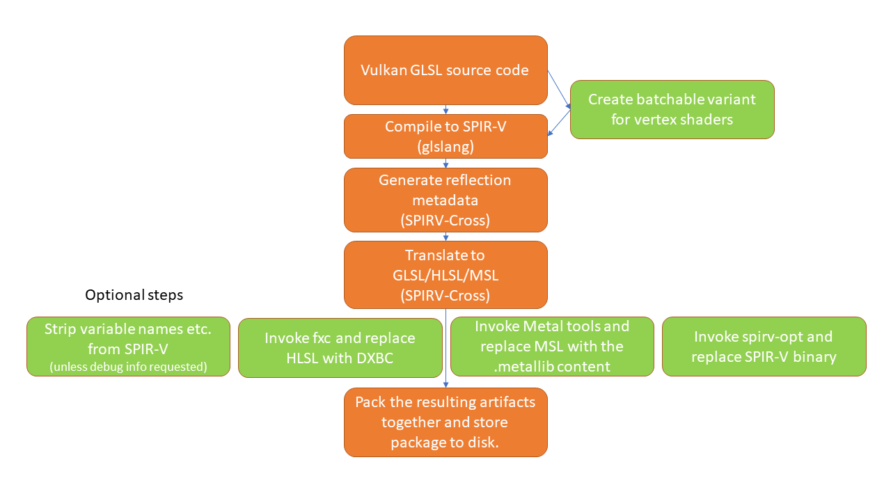

Qt Shader Tools Overview
The Qt Shader Tools module builds on the SPIR-V Open Source Ecosystem as described at the Khronos SPIR-V web site. For compiling into SPIR-V, glslang is used, while translating and reflecting is done via SPIRV-Cross.
For shader code to be written once in Qt applications and libraries, all shaders are expected to be written in a single language, which is then compiled into SPIR-V. This shading language is Vulkan-compatible GLSL at the moment. This is different from what the OpenGL-style GLSL Qt 5.x expects. See the GL_KHR_vulkan_glslspecification for an overview of the differences.
Source code for other shading languages, such as GLSL, HLSL, and the Metal Shading Language, is then generated from translating the SPIR-V bytecode, together with reflection information (inputs, outputs, shader resources). For GLSL in particular, this also involves generating multiple variants, meaning source code suitable for different GLSL versions, such as GLSL ES 100, GLSL ES 300, and GLSL 120 and 150. This is then packed into serializable QShader container objects, typically stored on disk as .qsb files. The Qt Rendering Hardware Interface consumes QShader instances directly, picking the shader source or bytecode that is best suited for the graphics API used at run time. A QShader object is typically deserialized from .qsb files shipped with the application or Qt itself in the Qt Resource System.
Some platforms provide the option of compiling shader source code to an intermediate format similar to SPIR-V. This involves running platform-specific tools. With Direct 3D, the qsb tool provides the option to invoke the fxc tool from the Windows SDK once the HLSL source code has been generated. It then replaces the HLSL source code with the DXBC binary generated by fxc. This can have a positive effect on applications' runtime performance since they no longer need to do the first phase of compilation (HLSL source to DXBC) themselves. For macOS and iOS, the XCode SDK provides similar tools. The downside of this approach is that running these tools is only possible on their respective platforms. Therefore, this is best suited for use in combination with qsb's CMake integration since doing shader conditioning at application build time implicitly comes with the knowledge needed about the target platform and what platform-specific tools can be invoked.
The following diagram describes the steps that happen during an invocation of the qsb tool:

The main components of the Qt shader conditioning system are:
- the
qsbcommand-line tool - CMake integration for the
qsbtool - QShader (part of the QtGui module)
- QShaderBaker (part of this module, the library equivalent of the
qsbtool)
Typical Usage with Qt Quick
Application developers typically work with custom shader code in Qt Quick scenes that have one of the following:
- ShaderEffect items
- QQuickItem subclasses that use scene graph nodes in combination with custom materials built by subclassing QSGMaterial.
For example, consider the following QML snippet:
ShaderEffect { width: 100; height: 100 fragmentShader: "myeffect.frag.qsb" }
Here the fragmentShader URL refers to a .qsb file relative to the .qml file's location. The application is expected to ship myeffect.frag.qsb next to the .qml file. To generate that file from the Vulkan-style GLSL source (which itself does not need to be shipped with the application), the application must use the qsb tool either directly or via CMake.
Typical Usage with Qt Quick 3D
Qt Quick 3D uses the Shader Tools module directly to perform shader conditioning at run time. In addition, it provides solutions for pre-generating shaders for materials at build time, in case a runtime dependency to shader compilers and other tools is not seen ideal. In either case, developers don't need to work directly with the qsb tool since it's encapsulated by the Qt Quick 3D's own framework and tools.